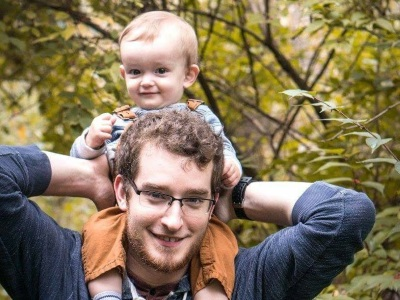

Jason Michael
About Me
My name is Jason Michael. I am a husband and a father of one. My start in development began with making small game mods with Epic Games' UDK for Unreal Engine 3.
Soon after that I found AutoHotkey, a free keyboard macro program. I used AutoHotkey to create small applications to help speed up the data entry parts of my job at the time. From AutoHotkey I had the opportunity to start building a process monitoring system in C# for DuPont.
I became attracted to the design side of web development and started watching all the HTML and CSS videos I could find, although I think back-end work might suit me better. My favorite part about development is being able to have an idea and bring it to life and turn it into something creative and useful.